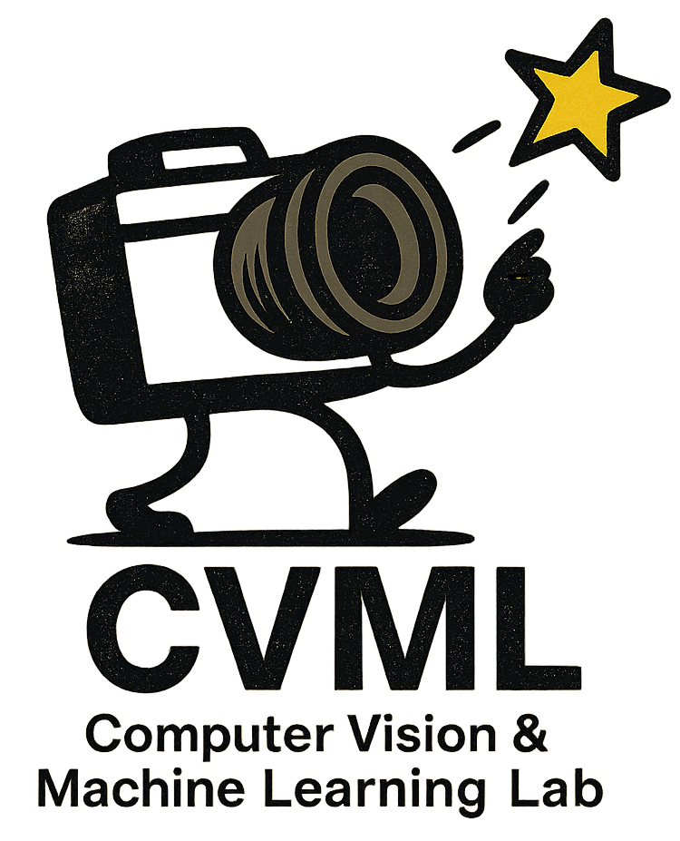

KAIST
Computer Vision & Machine Learning Lab

Welcome to the Computer Vision and Machine Learning (CVML) Lab at KAIST AI. We bridge the gap between digital pixels and real-world integrity through Safe, Physically Grounded, and Trustworthy AI.
Our core research areas include:
- Trusted Generative AI for Human Values: Pioneering high-fidelity generation across text-to-image, text-to-video, and text-to-3D modalities with advanced personalization techniques, while ensuring fairness and eliminating bias.
- Perception & Reasoning for Safety-Critical AI: Developing safe AI systems that perform under real-world challenges such as low light, adverse weather, autonomous driving, and other safety-critical applications.
- Physical Grounding & Spatial Intelligence: Bridging MLLMs with the physical world by teaching 3D spatial reasoning and physical laws, and advancing fine-grained spatial understanding for precise interaction between AI and its environment.
- Efficient & Scalable AI: Creating resource-efficient AI through lightweight training, model compression and quantization, and dataset distillation.
Our work is consistently recognized at premier AI conferences, including CVPR, NeurIPS, and ICLR. We are committed to advancing the science of AI in a collaborative and supportive environment.
Latest News
Location
KAIST Computer Vision & Machine Learning Lab
주소: 서울특별시 서초구 태봉로 108, 양재AI허브 6층
Address: 6th floor, 108, Taebong-ro, Seocho-gu, Seoul, Republic of Korea